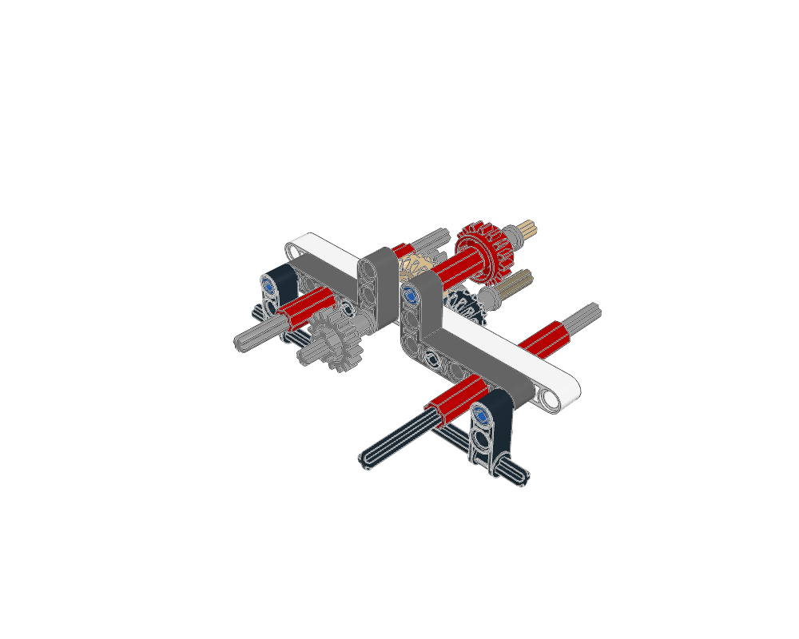
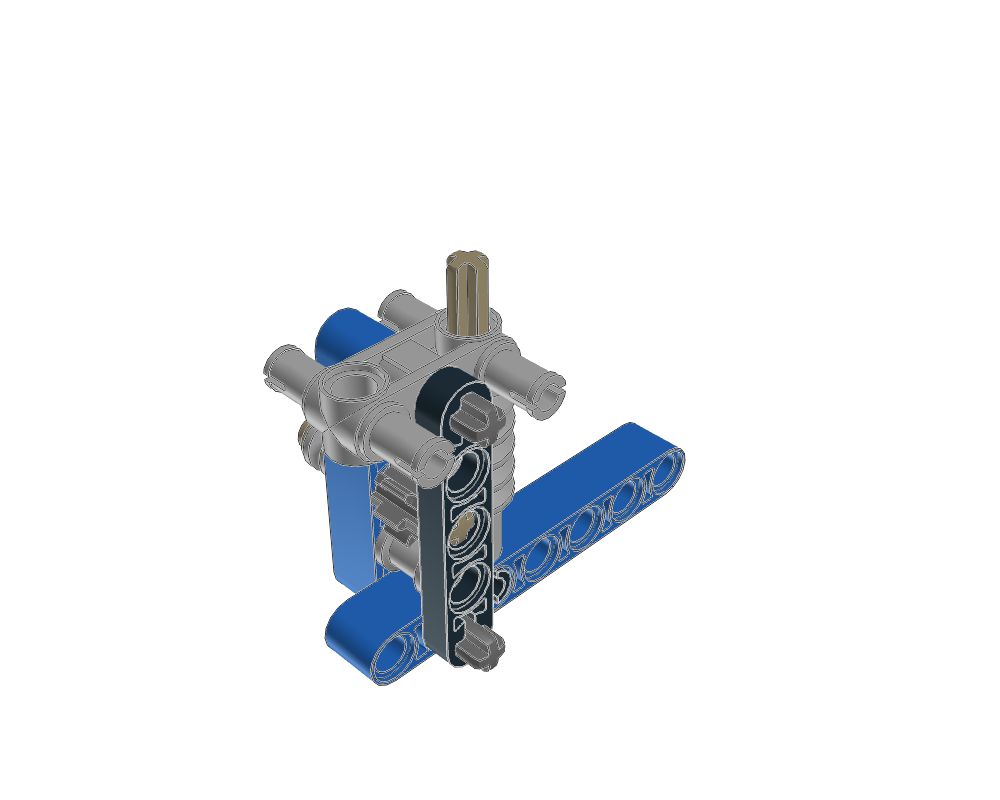
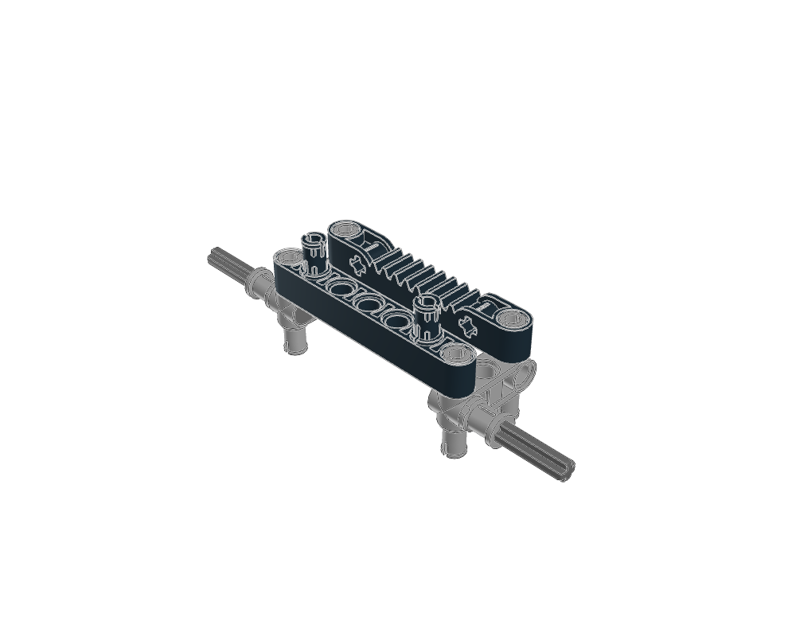
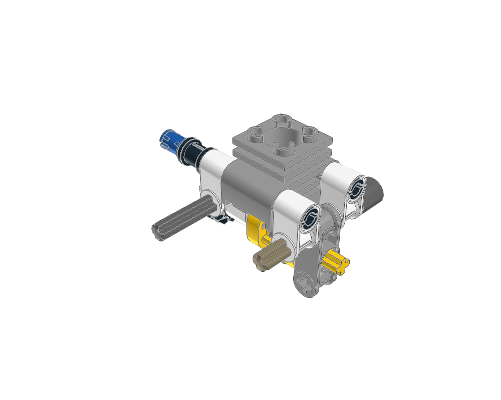
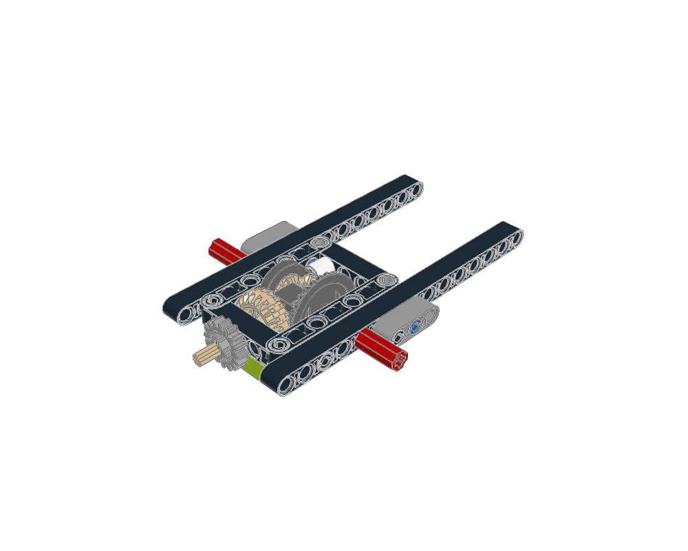
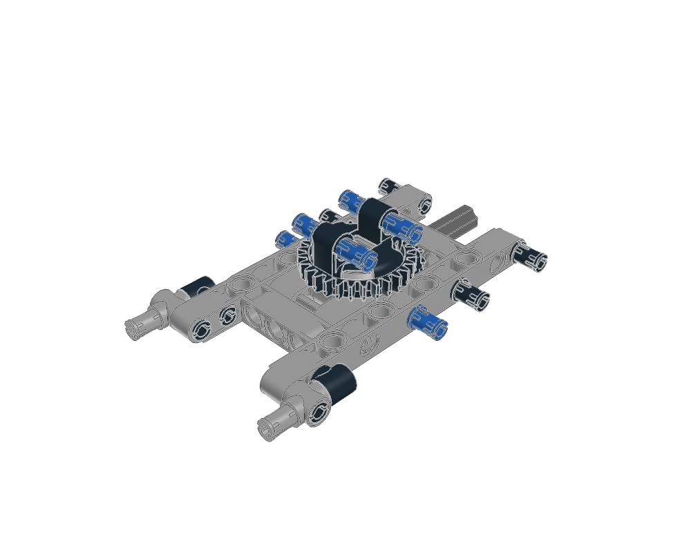

Gear and axle module
Study gear stacks, axle joiners and the supports that register them to the surrounding gearbox.
Adaptation guideSix source studies with step-by-step images, real parts and adaptation notes. Open a construction to study its internals before reusing it. Analytical mechanism verification is deferred.

Study gear stacks, axle joiners and the supports that register them to the surrounding gearbox.
Adaptation guide
Keep a worm shaft, its driven gear and retaining pieces together with their supporting layers.
Adaptation guide
A steering reference may contain the sliding rack and carrier while its driving pinion belongs to the parent.
Adaptation guide
Use dedicated piston, connecting-rod, crankshaft and cylinder parts; read the source and per-step parts list for internals hidden within a grouped step.
Adaptation guide
Inspect the internal bevel gear arrangement through the open carrier and source part list; preserve both axle outputs and their supports.
Adaptation guide
Keep the two turntable halves, the driving gear and the base supports together while exposing the rotating attachment face.
Adaptation guide